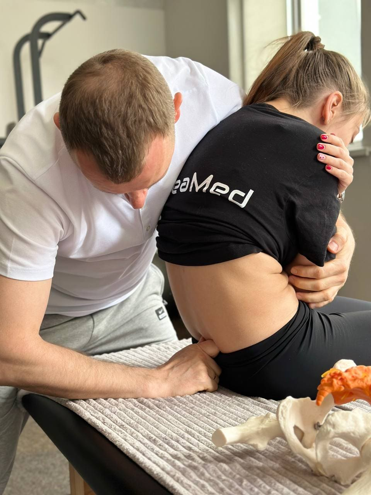

ProNeuroFit — курс практичних семінарів
НЕЙРОМЕХАНІКА У ФІЗИЧНІЙ ТЕРАПІЇ
Працюєте з болем, але він повертається?
Відчуваєте, що за симптомом стоїть причина, яку складно знайти?
Хочете зрозуміти, як насправді формуються дисфункції та захворювання і навчитися безпечно та ефективно їх коригувати?
Хочете отримати систему координат у роботі з тілом, а не набір розрізнених технік?
Хочете вивести свою практику та клінічне мислення на новий рівень?
Тоді цей курс для вас
6–7 червня 2026
Дніпро
Про курс
НЕЙРОМЕХАНІКА У ФІЗИЧНІЙ ТЕРАПІЇ
Це система, яка поєднує:
—
прикладну нейрофізіологію
—
біомеханіку
—
прикладне функціональне тестування
—
м’які мануальні корекції без агресії
—
фасціальний і функціональний підхід
—
роботу через нервову систему
—
інтеграцію через рух
Ми працюємо через нервову систему — коли організм сам відновлює функцію.
Нейромеханіка розглядає тіло як єдину систему, де рух, фасції, постура і нервова регуляція формують результат.
Безпечно
Фізіологічно
Ефективно

Технологія
Нейромеханіка як інтеграційна модель у клінічній практиці
Технологія нейромеханіки впроваджена у клінічну практику та застосовується як інтеграційна модель у реабілітаційній медицині та ортопедії.
Вона використовується у клініці ReaMed як частина системного підходу до роботи з пацієнтами.
Instagram ReaMedКому підходить
Для фахівців, які хочуть працювати глибше
Реабілітологи
Лікарі
ортопеди, неврологи, ФРМ
Остеопати
Масажисти
Тренери
та спеціалісти руху
Що ви отримаєте
Практичні результати вже після кожного модуля
Системне клінічне мислення
Логіку роботи: тест → аналіз → корекція → інтеграція
Навички функціональної діагностики
Розуміння причин болю
М’які мануальні техніки без агресії
Роботу через нервову систему
Інструменти для стабільного результату
Можливість застосовувати знання вже після кожного модуля
Програма курсу
4 послідовні модулі, що формують цілісну систему роботи з тілом
Курс складається з 4 послідовних модулів, які формують цілісну систему роботи з тілом. Кожен модуль — це окремий рівень, який можна застосовувати на практиці. Інтервал між модулями — близько 3 місяців.
01
Нейромеханіка в постурології: основи функціонального тестування та мануальних корекцій
Базовий модуль, який формує системне мислення та логіку роботи з пацієнтом.
02
Фасціальні мануальні корекції у реабілітаційній нейромеханіці. Основи біодинаміки
Поглиблення у фасціальну систему та роботу з напруженням і болем.
03
Функціональні мануальні корекції у реабілітаційній нейромеханіці: прямий та непрямий підхід
Модуль про функцію, дисфункції та компенсації.
04
Нейромеханіка хребта та черепа: діагностика та функціональні мануальні корекції
Інтеграція всіх знань у роботу з хребтом і черепом.
Програма курсу
Перший модуль
Нейромеханіка в постурології: основи функціонального тестування та мануальних корекцій
Про семінар
Це базовий модуль курсу, який формує фундамент системного мислення в нейромеханіці.
Основний акцент
клінічне мислення
логіка руху
розуміння дисфункції
функціональне тестування
У програмі
Нейромеханіка як система, роль нервової системи, функціональне тестування, аналіз руху, дихання, діафрагми, постуральні корекції.
—
нейромеханіка як система: нервова система, фасції, рух, постура
—
роль нервової системи у формуванні руху
—
сенсорно-пропріоцептивна регуляція
—
прикладна функціональна анатомія
—
фасція як система передачі напруження
—
принципи пальпації
—
введення в постурологію
—
функціональне тестування
—
аналіз руху в статиці та динаміці
—
роль дихання
—
робота з діафрагмами
—
постуральні корекції
Практична частина
—
алгоритм обстеження пацієнта
—
пошук первинної дисфункції
—
аналіз компенсацій
—
мануальне тестування
—
робота з фасціальним відгуком
—
базові корекції через нервову систему
—
побудова логіки терапії
Що ви отримаєте
—
системне розуміння роботи тіла
—
алгоритм діагностики
—
навички пошуку причини
—
базові мануальні інструменти
—
безпечний підхід до пацієнта
Результат
Ви навчитесь бачити тіло як систему, знаходити причину порушення та будувати ефективну стратегію відновлення
Викладач
Сергій Мелашенко
Лікар-ортопед-травматолог
Лікар фізичної та реабілітаційної медицини
—
23 роки клінічного досвіду
—
магістр педагогіки вищої школи
—
викладач кафедри фізичного виховання, спорту та реабілітації Запорізького державного медико-фармацевтичного університету
—
засновник клініки реабілітаційної медицини ReaMed
—
автор навчального проєкту ProNeuroFit (нейромеханіка у фізичній терапії)

Реєстрація
Приєднуйтесь до семінару та забронюйте місце за спеціальною ціною
Дводенний інтенсив із максимальною кількістю практики, чіткою структурою та системним підходом до роботи з тілом.
Вартість участі
Умова реєстрації: передоплата
Стандартна ціна
10 000 грн
Рання реєстрація
9 000 грн
до 10 травня
Контакти для реєстрації
Кирило
Формат навчання
—
2 дні інтенсиву
—
максимум практики
—
робота в парах
—
чітка структурована подача
У вартість входить
—
навчальні матеріали
—
сертифікат
—
кава-брейки
ProNeuroFit
Хочете отримати систему, яка дає стабільний результат?
Запишіться на курс ProNeuroFit
Кількість місць обмежена